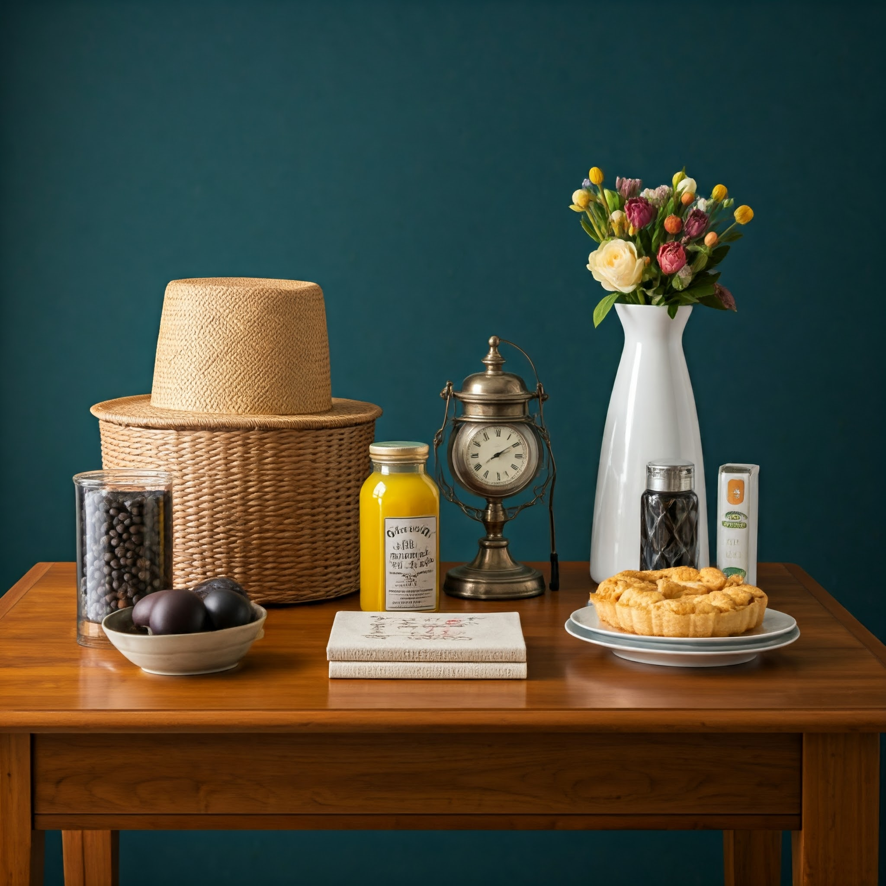

30, Jun 2024
Setting Realistic Deadlines as a Software Developer
You've probably experienced the pressure of tight deadlines. Maybe you want to be the Joker that always delivers, or maybe you are extremely competitive with your peers. Whatever the reason, while it's important to be efficient and productive, setting unrealistic deadlines can lead to burnout, decreased quality, loss of trust and even project failure. So let's explore some best practices for setting realistic deadlines that will help you deliver high-quality work on time.
Understanding the scope of tasks
The first step in setting a realistic deadline is to fully understand the scope of the task. This involves breaking down the project into smaller, more manageable components and estimating the time required for each. I remember being pressured on numerous occasions to just give an estimate of how much time a project will take overall, on the spot ... big mistake if you give one. Here's a simple example of breaking down a project:
Project: Develop a web application with the following features:
• User registration and login
• Product catalog
• Shopping cart
• Checkout process
Breakdown:•
Frontend: 40 hours
• UI Design - 8 Hours
• UI Implementation - 25 hours
• Testing environment - 7 Hours
•
Backend: 60 hours
• Design - 4 hours
• APIs - 24 hours
• API 1 - 3 hours
• API 2 - 3 hours
• ... etc
• Security - 15 Hours
• Payment service integration - 10 Hours
• Testing environment - 7 Hours
•
Database: 20 hours
• Design - 9 hours
• Test data - 4 hours
• Testing environment - 7 Hours
•
Integration: 25 hours
• Backend x Database - 10 Hours
• Frontend x Backend - 15 Hours
•
Testing: 30 hours
• System debugging - 23 hours
• A/B Testing - 7 hours
•
Client changes: 30 hours
Once you have a clear understanding of the scope, you can start to estimate the total time required. You dont even have to be this detailed, even in the previous example, estimating just Frontend, Backend, Database & Testing and evaluating those; is infinitely better than saying "I build app in 1 month!!!".
Considering dependencies and unforeseen challenges
When estimating the time required for a task, it's important to consider any dependencies and potential unforeseen challenges. For example, if you're using a 3rd party library, which just happens to release an app breaking update at the worst time, this could delay your project. Additionally, you may encounter unexpected business difficulties or client changes that can slow down your progress.
To account for these factors, it's a good practice to add a buffer to your estimated time. Did you notice the dedicated *"Client Changes"• slot in the above example? This buffer can be used to address any unforeseen challenges and ensure that you meet your deadline.
Communicating effectively with stakeholders
Effective communication with stakeholders is essential for setting and managing deadlines. Make sure to keep your stakeholders informed of your progress and any potential challenges that may arise. This will help to build trust and ensure that everyone is on the same page.
When communicating with stakeholders, it's important to be honest and transparent about the expected timeline. Avoid making promises that you may not be able to keep, as this can lead to disappointment and frustration. It's always wise to communicate the impact of changes on the timeline and give them options to whether the wish to continue or not.
If you are a freelancer, it's often the case that you have much more technical knowledge than your client, your client may ask for change
X which may lead to an extra week of work. But with a little bit of investigation, turns out that your client's requirement can be archived with change
Y which may require only and extra two days.
In this scenario, communicating option
Y to your client and its benefits while also keeping the door open on option
X will put you at the highest levels of professional trust with your client.

Using Agile methodologies
Agile methodologies, such as Scrum and Kanban, can be very helpful for setting and managing deadlines. These methodologies involve breaking down projects into smaller iterations, or sprints, and regularly reviewing progress. This allows you to make adjustments to the timeline as needed and ensure that you're on track to meet your goals.
I personally, prefer Kanban as it seemed in my experience to have less of a negative impact on productivity and developer moral. It also works perfectly whether you work for a small company or a freelancer. However, keep on mind that every company/team has their own methodology and learning and adapting to it is no less important that getting acquainted with the codebase.
Avoiding scope creep
Scope creep is the phenomenon of adding new features or requirements to a project after it has already begun. This can significantly delay the project and make it difficult to meet the original deadline. To avoid scope creep, it's important to have a clear and well-defined project scope from the beginning. However, unfortunately, it's highly unusual that projects start with perfect no-changing scopes. The whole point of Agile methodologies was to have the flexibility to integrate new changes and requirements smoothly. And usually the trick you need to master is that if new requirements arise, they should be evaluated carefully and added to the project only after through communication with stakeholders on both the time and financial impact.
Prioritizing tasks effectively
When setting deadlines, it's important to prioritize tasks effectively. This means focusing on the most critical tasks first and delegating or postponing less important ones. Using a task management tools like a Kanban board can help you visualize your priorities and stay organized.
Learning from experiences
One of the best ways to improve your ability to set realistic deadlines is to learn from your own experiences. Keep track of your past projects and analyze what went right and what went wrong. This will help you to identify areas where you can improve and make better decisions in the future.
For example, let's say you worked on implementing a "Login Screen" in a website or an "Authentication API" in a backend. This experience will allow you a higher degree of confidence in estimating how much time it'd take you to undergo similar -not the same- tasks.
Setting realistic deadlines is a crucial skill for any software developer. Keep in mind that no one solution will fit all situations. You must make best of your own intuition to gauge your own skill, and work environment and be able to assess your timelines best. With that said, I hope this post at least provided you with a descent starting point.